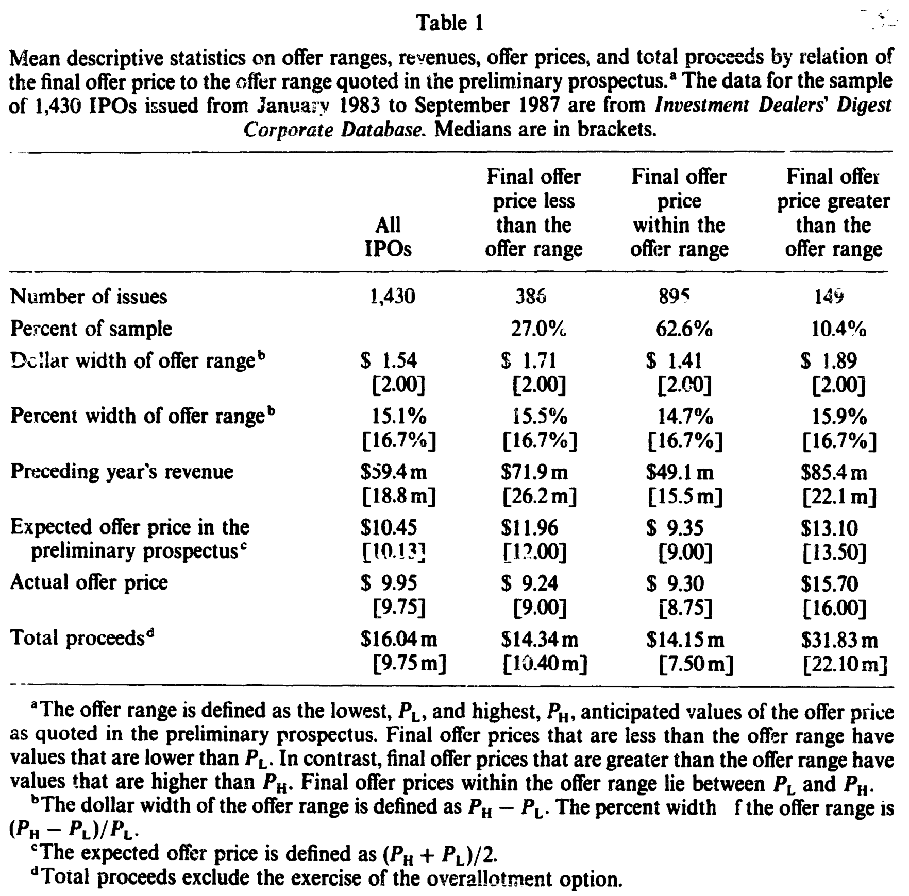
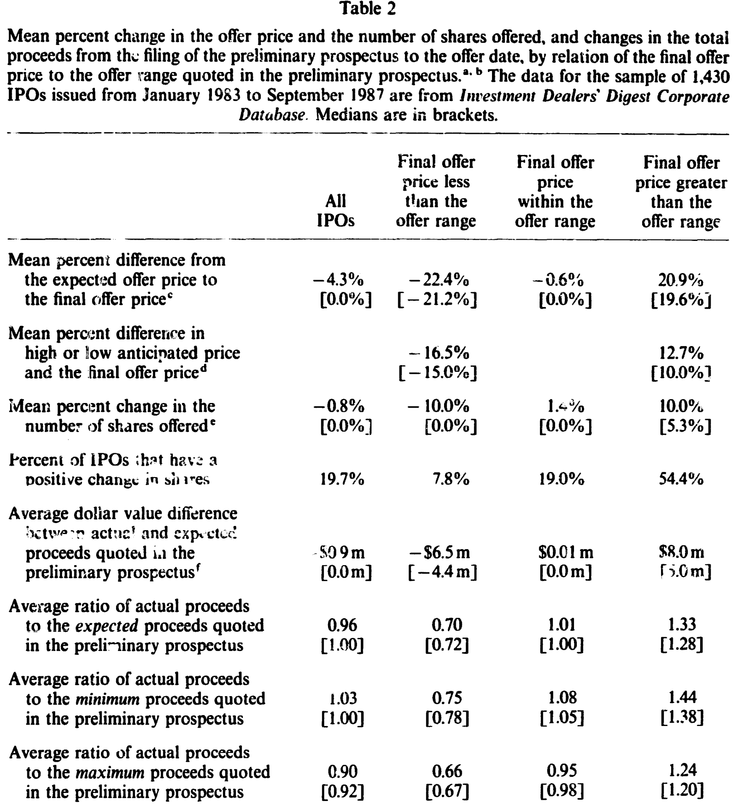
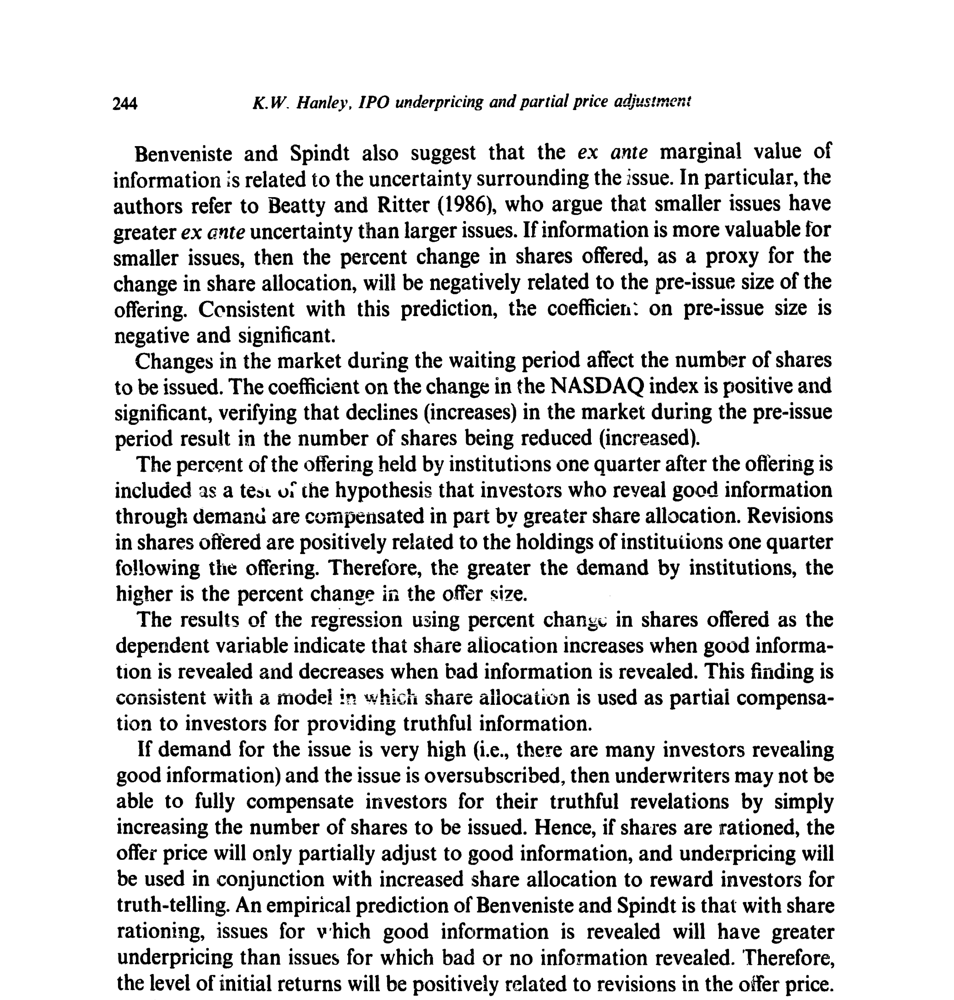
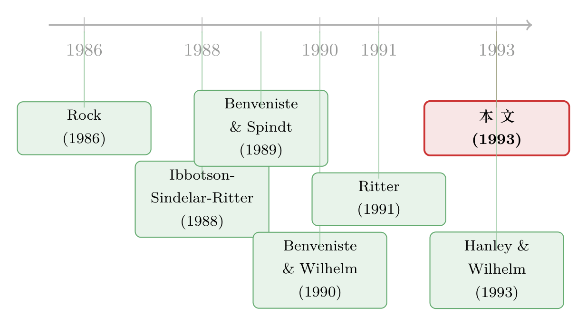

新股的『欲扬先抑』：定价区间里藏着的一把收益尺
本文读的是 Hanley (1993, Journal of Financial Economics)：把 1,430 只美国新股按「最终发行价相对招股书价格区间」分成三档，发现定价【冲破区间上限】的那一档，上市首日平均收益高达 20.7%；落在区间内的是 10.0%；而跌破区间下限的，只有 0.6%，与零无异。一句话——招股书里那条不起眼的价格区间，竟是首日「打折」幅度最好的预测器，而这恰恰印证了 Benveniste–Spindt 的「部分调整」（partial adjustment）机制。
1 一桩「越涨越亏」的怪事
先讲一个 1986 年的故事。
那年三月，微软要上市。高盛（Goldman Sachs）替它递交的初步招股书里，写着一个预期发行价区间：每股 $16 到 $19。然后「路演」（road show）开始了。高盛的销售团队很快发现这单「很烫手」——大机构客户纷纷表示「有多少要多少」。于是发行价被一路抬到 $21，承销团还劝两位老股东多卖了 295,000 股（比原计划多出 14.8%）。
可即便如此，微软挂牌第一天的收盘价是 $27.75，首日收益 32%。
这就奇怪了。公司明明把价格从 $19 抬到了 $21，明明知道需求火爆，为什么不干脆定到 $27、把这笔钱自己揣进兜里，反而要白白把一天 32% 的收益送给打新的投资者？这笔「留在桌上的钱」（money left on the table），到底是谁的、又为什么非送不可？（关于发行人为何对此「不生气」，可参见《盖茨的那场「不高兴」：新股为什么总把钱留在桌上》与《151 万、不，1.51 亿美元留在桌上，他为什么还笑得出来？》。）
这种「价格往上修了，但只修了一半、剩下一半让给投资者」的现象，Ibbotson、Sindelar 和 Ritter (1988) 给它起了个名字，叫部分调整（partial adjustment）。承销商（和发行公司）明明可以把发行价一口气抬到上市当天的市价，却偏偏只「部分地」往上调。
问题是：为什么？
2 Benveniste–Spindt：把「说真话」写成一张定价表
要回答「为什么surplus会流向投资者」，绕不开 Benveniste 和 Spindt (1989) 那篇经典。
他们的出发点很朴素：从初步招股书递交、到最终定价，中间有一段「等待期」（waiting period）。在这段时间里，承销商通过「非约束性的认购意向」（nonbinding indications of interest），向那些常客投资者（regular investors）打探需求。需求高，说明有好消息，最终价格就会被定在预期价之上；需求低，说明有坏消息，价格就压到预期价之下。
但这里有个机制设计的难题：投资者凭什么要【如实】告诉承销商「我看好这只票」？毕竟，一旦他说好，价格就会被抬高，他自己的买入成本不就上去了吗？
Benveniste–Spindt 的答案是——用一张「定价 + 配售」的时间表，把说真话变成一件划算的事。承销商对那些透露了好消息的投资者，给予两样补偿：更高的配售额（allocation）和更高的折价（underpricing）。只要配售额增长的速度，快过折价收益下降的速度，那么「老实人」拿到的总期望利润，就一定高于「说谎者」。说谎的人则要冒着配售被砍的风险——在股票被「限量供应」（rationed）的状态下，谎报坏消息等于把自己到嘴的肥肉吐出去。
于是 Benveniste–Spindt 在他们的定理 1 里给出一个干净的预测：当好消息带来的需求超过了可供「预售」的份额，折价就必然出现，而且「折价的高低，直接取决于预售市场里的兴趣强度」。再具体一点，他们写道：「定价在区间上半部的发行，往往折价更多」（p. 353）。
读到这里，一个自然的问题是：这套理论很漂亮，但它说的「需求强度」「投资者透露的好消息」，都是藏在承销商账本里、外人根本看不见的东西。怎么检验？
3 关键的一步：把「私下的好消息」翻译成一个公开变量
Hanley 这篇文章真正聪明的地方，就在这里。
她意识到：虽然我们看不见投资者私下透露了多少好消息，但我们看得见一个它的【公开影子】——最终发行价相对于招股书价格区间的位置。如果路演里真的涌出了好消息、需求真的火爆，承销商就会把价格往上修，修得多了就冲破区间上限；反之，坏消息让价格跌破下限。区间，本身就是承销商当初对「真实价值」的「善意估计」（bona fide estimate，这是 SEC 的 Regulation S-K 唯一的要求）。
所以她把这个相对修正幅度定义出来，作为整篇文章的分组尺子：
a1 | final offer price P0, the price actually set on the offer date after the road show a2 | expected offer price PE, the midpoint of the preliminary filing range a3 | PE is defined as the midpoint of the low price PL and the high price PH quoted in the preliminary prospectus
而首日收益（initial return）则按最朴素的方式算：
$$R_1 = \frac{P_1 - P_0}{P_0}$$
其中 \(P_0\) 是最终发行价，\(P_1\) 是上市首日的收盘（或买方报）价。
有了这把尺子，识别策略就呼之欲出了：把全部新股按 \(P_0\) 落在区间的哪一侧，分成三档——
- 冲破上限（\(P_0 > P_H\)）：好消息被透露，理论预测折价最大；
- 落在区间内（\(P_L \le P_0 \le P_H\)）：没什么新信息；
- 跌破下限（\(P_0 < P_L\)）：坏消息被透露，理论预测几乎不折价。
这其实是一个非常「自然实验」气质的设计：不需要去估计什么结构参数，只要让数据自己按区间分三堆，再看三堆的首日收益是不是像理论说的那样阶梯排列。样本里，平均有 10% 的新股冲破上限、63% 落在区间内、27% 跌破下限，而且这个比例在 1983–1987 的整段样本期里相当稳定。
4 数据与描述性事实
数据来自 Investment Dealers' Digest (IDD) 公司数据库，覆盖 1983 年 1 月到 1987 年 9 月的 1,430 只「确定包销」（firm commitment）新股。IDD 难得地报告了初步招股书里的最高价 \(P_H\) 与最低价 \(P_L\)；首日价格则取自 Standard & Poor's 的场外（OTC）每日股价记录。样本剔除了缺失价格区间的发行、单位发行（unit offerings）和银行股。
一个先要打消的疑虑是：会不会三档之间，本来就长得很不一样、区间宽窄都不同，导致结果只是「苹果比橘子」？表 1 给出的答案让人安心：三档的价格区间宽度几乎一样——美元宽度的中位数都是 $2.00，百分比宽度的中位数都是 16.7%，几乎像是一个行业惯例式的「标准区间」。真正有差别的是规模：冲破上限那一档，发行前一年营收（$85.4m）和预期发行价（$13.10）都明显更高。

Table 1
更有意思的是「修正」本身。表 2 把从递表到定价之间的变化逐项摊开：跌破下限的那档，最终价比预期价平均低了 22.4%；冲破上限的那档，则平均高出 20.9%。而且价格修正几乎总是伴随着发行股数的修正——冲破上限的发行，平均把股数【增加】了 10%，跌破下限的则【减少】10%。冲破上限的发行增加股数的概率，是区间内发行的约三倍、跌破下限发行的约七倍（54.4% vs. 19.0% vs. 7.8%）。

Table 2
这一点至关重要：它说明承销商对「透露好消息」的补偿，同时用了两条腿——既多给了你份额（股数增加），又给了你折价。这正是 Benveniste–Spindt 那个「配售—折价」权衡的直接画面。
5 主结果：一条漂亮的阶梯
现在揭晓那条核心曲线。
整段样本期里，三档的平均首日收益是：
- 冲破上限：
20.7% - 落在区间内：
10.0% - 跌破下限：
0.6%（与零没有显著差别）
三档两两之间的差异，都在 1% 水平上显著。换句话说，招股书里那条价格区间，就是首日折价幅度最好的「预报员」：价格被往上修得越狠，留给打新者的钱反而越多——这正是「部分调整」的实证指纹。
不止于均值。冲破上限的发行里，有 83% 在上市首日上涨；区间内是 62%；跌破下限的只有 33%。也就是说，买到「冲破上限」那批新股的投资者，几乎是清一色地赚钱。这与 Benveniste–Wilhelm (1990) 把 Rock (1986) 的「赢家诅咒」和 Benveniste–Spindt 结合起来的模型预测一致：当坏消息在预售市场被揭示时，发行就【不会】被折价。

Figure 1: presents the average initial return by year according to the relation of
接着，Hanley 又把这套逻辑放进回归里检验（以首日收益为被解释变量，标准误用 White (1980) 做了异方差调整）。几个结果值得一提：
- 价格修正幅度 \(g\) 与首日收益显著正相关——价抬得越高，折价越大；
- 发行规模越小，折价越大（与 Ritter (1987) 一致）：小盘股里信息的边际价值更高、配售更稀缺；
- 等权 NASDAQ 指数在等待期里的变动，与折价显著正相关；
- 承销商市场份额（作为声誉代理，按 1983–1987 累计承销金额占比算，美林以约
$16十亿、22%的份额居首）与折价【负相关】——声誉越高的投行，越把价定在「与信息相符」的位置（Carter & Manaster, 1990）； - 机构持股比例与折价负相关但不显著，且一个耐人寻味的细节是：机构在「冲破上限」发行里持股最多（
44%），却在「跌破下限」发行里持股次多（32%），在区间内最少（23%）——这与「承销商有时会要求常客接下定价过高的发行、以换取将来打新资格」这一假说吻合。
6 反转：部分调整只是「短跑」
故事到这里似乎已经完满。但 Hanley 多走了一步，而这一步恰恰划清了贡献的边界。
Ritter (1991) 曾提出，首日收益高的新股，长期反而表现最差，并暗示这或许能「为部分调整现象提供线索」。如果真是这样，那「冲破上限」那批高折价的新股，理应在上市后的两年里跌得最惨。
于是 Hanley 用 NASDAQ 调整后的两年回报来检验：
$$R_{2yr} = \frac{P_{2yr} + D_{2yr} - P_2}{P_2} - \frac{I_{2yr} - I_2}{I_2}$$
其中 \(P_2\) 是第二个交易日的价格（特意避开首日折价），\(P_{2yr}\) 是两年后的价格，\(D_{2yr}\) 是期间股利，\(I\) 是同期等权 NASDAQ 指数。
结果是个干净的「无」：新股的长期表现，【既不能】由发行价的修正解释，【也不能】由首日收益解释。换句话说——部分调整是一个彻头彻尾的短期现象。它写在上市第一天，与之后两年的命运无关。这一笔，实际上把「部分调整 = 过度反应」的简单等号给划掉了。
7 文献脉络
把这条线索捋一捋，会看到一段很清晰的「从现象到机制再到检验」的演进。
最早，正收益的新股首日折价被反复记录下来，成了金融学里最顽固的「异象」之一（综述见 Smith, 1986；Hanley & Ritter, 1992）。接着，Rock (1986) 用「赢家诅咒」给出了第一个有力的信息经济学解释：知情者只抢便宜货，不知情者必须被折价补偿才肯入场。
然后，Ibbotson、Sindelar 和 Ritter (1988) 把「价格只部分上调」这个规律命名为部分调整，但它还只是一个待解释的现象。真正关键的一步，是 Benveniste 和 Spindt (1989) 把它机制化——用一张诱导说真话的「配售—折价」时间表，解释了 surplus 为何流向投资者；Benveniste & Wilhelm (1990) 进一步把 Rock 的零售投资者一并纳入。

而 Hanley (1993) 所处的位置，是给这套理论补上第一个干净的、可观测的检验：她找到了「区间相对位置」这个公开代理变量，把藏在承销商账本里的「私下好消息」翻译成了人人可算的数字，并用 1,430 只新股证实了那条阶梯。再往后，Hanley & Wilhelm (1993) 用真实的配售数据，进一步验证了机构与散户之间的份额分配。可以说，这篇文章是连接「Benveniste–Spindt 理论」与「后续一切用区间修正做识别的实证」的那座桥。（这条「修正区间」的尺子后来被反复使用，相关讨论可参见《新股定价，到底「有没有效率」？》与《新股「打折」的真正理由，不是让你说真话，而是先让你肯掏钱》。）
8 评论与延伸（Q&A + 研究方向）
(a) 几个可能的疑问
Q：把新股按「区间位置」分三档，会不会只是把『大盘股 vs 小盘股』重新贴了个标签？
这是最该担心的内生性。Hanley 用表 1 做了一定的防守：三档的区间宽度中位数完全一样（
$2.00/16.7%），说明区间不是随规模随意拉宽的。但她也坦承冲破上限那档规模确实更大、营收更高，所以回归里特意控制了发行规模，发现「修正幅度」在控制规模后仍显著正相关。严格说，这不是随机分配的实验，但「区间位置」捕捉的主要是【修正方向】这一额外维度，而非单纯的规模。
Q：首日收益 20.7% vs 0.6% 的阶梯，会不会只是承销商「定价能力差」的结果，而非信息补偿？
如果只是定价误差，应该是对称的随机噪声，没理由系统性地偏向「冲破上限就涨、跌破下限就平」。而数据里：冲破上限的发行
83%上涨、跌破下限的33%上涨，呈现出明确的方向性，且同时伴随股数的系统性增加。这种「方向 + 配售」的联动，恰恰是定价误差解释不了、而信息补偿解释得了的。
Q：跌破下限的发行首日收益是 0.6%，承销商为什么不干脆把价格再压低、好歹给点折价？
Benveniste–Wilhelm (1990) 的预测就是：坏消息被揭示时，发行【不该】被折价。
0.6%与零无异，正好印证。补一个制度细节：价格跌破下限会触发 SEC 要求公司修订注册声明、甚至重新分发招股书，使这类发行在注册中平均要多耗时间（跌破下限64天，冲破上限只要48天），承销商反而有动机尽快了结而非继续压价。
Q：这能证明 Benveniste–Spindt 模型「对」吗？
不能直接证明，因为最核心的变量——投资者私下透露的需求、实际配售明细——在 IPO 里根本拿不到，Hanley 自己也说「无法做精确检验」。她做的是一致性检验：所有可观测的含义（折价阶梯、股数联动、声誉负相关）都与模型方向一致。真正的配售证据要等 Hanley & Wilhelm (1993) 拿到内部数据才补上。
Q：长期表现「无法被解释」，是不是说明这篇文章的机制其实没用？
恰恰相反，这是它最克制也最有价值的地方。它把「部分调整」严格限定为一个短期定价现象，与 Ritter (1991) 的长期反转切割开来。短期折价是承销商的【信息补偿】，长期回报则是另一回事（情绪、过度乐观等）。把两件常被混为一谈的事分开，本身就是贡献。
Q：样本是 1980 年代、定价靠『簿记建档』（bookbuilding）的美国市场，结论还适用于今天/别的市场吗？
机制（用配售+折价诱导说真话）依赖于承销商有「自由裁量配售」的权力。在拍卖式发行、或配售受严格管制的市场，这套逻辑会变弱。所以「区间位置预测首日收益」在不同制度下的强弱，本身就是一个可检验的跨市场问题（见下方研究方向）。
(b) 几个可能的研究问题与提案
1. 把「区间修正」尺子搬进公司债一级市场。 【经济故事】公司债发行同样有「初步价格指引」（IPT/price talk）到「最终定价」的收窄过程，承销商同样在向机构打探需求。那么「定价相对初始指引的修正方向」，是否也预测了债券上市后的首日「折价」（见《新债上市第一笔成交，凭什么白赚 47 个基点？》）？这等于把 Benveniste–Spindt 的检验从股票搬到信用市场。 【可行性】中。需要 price talk 与最终利差数据（可从 Bloomberg/IFR、承销商 term sheet 拼），首日价格用 TRACE。难点在 price talk 的系统采集与「指引区间」定义的标准化。
2. 外资认购意向与「修正幅度」。 【经济故事】如果承销商打探到的「好消息」很大程度来自外资机构的认购意向，那么外资参与度高的发行，是否修正更猛、折价更大？这把「谁在透露信息」具体到了投资者类型，且与外资持有人的信息角色直接相关。 【可行性】中。需要发行后的机构持股明细（13F 难拆到认购环节）或承销商内部配售数据；后者极难获得，是主要瓶颈。可退一步用「上市后一季度外资持股」作粗代理，但有内生性。
3. 簿记建档 vs 拍卖：区间的「预测力」会消失吗？ 【经济故事】Hanley 的阶梯依赖承销商的裁量配售。若在以拍卖定价为主的市场（如某些时期的法国、以色列、日本），承销商无从「奖励说真话」，那么「区间位置→首日收益」的阶梯应当显著变平。这能反过来检验机制本身。 【可行性】高。跨国 IPO 数据（含发行机制标识）相对可得，可做发行机制 × 区间位置的交互回归，识别清晰。
4. 流动性视角：高修正发行的『短期折价』里，有多少是流动性补偿？
【经济故事】首日 20.7% 的折价，未必全是信息租金，也可能含「上市初期难脱手」的流动性补偿。把折价拆成信息分量与流动性分量，能更干净地界定 Benveniste–Spindt 机制的真实份额。
【可行性】中。需要上市初期的成交、价差与深度数据；识别上可用「同期可比公司流动性」做基准，但分量分解的设定较敏感。
参考文献
- Benveniste, L. M., & Spindt, P. A. (1989). How investment bankers determine the offer price and allocation of new issues. Journal of Financial Economics 24(2), 343–361.
- Benveniste, L. M., & Wilhelm, W. J. (1990). A comparative analysis of IPO proceeds under alternative regulatory environments. Journal of Financial Economics 28(1–2), 173–207.
- Carter, R., & Manaster, S. (1990). Initial public offerings and underwriter reputation. Journal of Finance 45(4), 1045–1067.
- Hanley, K. W. (1993). The underpricing of initial public offerings and the partial adjustment phenomenon. Journal of Financial Economics 34(2), 231–250.
- Hanley, K. W., & Wilhelm, W. J. (1993). Evidence on the strategic allocation of initial public offerings. Journal of Financial Economics (forthcoming).
- Ibbotson, R. G., Sindelar, J. L., & Ritter, J. R. (1988). Initial public offerings. Journal of Applied Corporate Finance 1(2), 37–45.
- Ritter, J. R. (1987). The costs of going public. Journal of Financial Economics 19(2), 269–281.
- Ritter, J. R. (1991). The long-run performance of initial public offerings. Journal of Finance 46(1), 3–27.
- Rock, K. (1986). Why new issues are underpriced. Journal of Financial Economics 15(1–2), 187–212.
- Smith, C. W. (1986). Investment banking and the capital acquisition process. Journal of Financial Economics 15(1–2), 3–29.
- Welch, I. (1991). An empirical examination of models of contract choice in initial public offerings. Journal of Financial and Quantitative Analysis 26(4), 497–518.
- White, H. (1980). A heteroskedasticity-consistent covariance matrix estimator and a direct test for heteroskedasticity. Econometrica 48(4), 817–838.